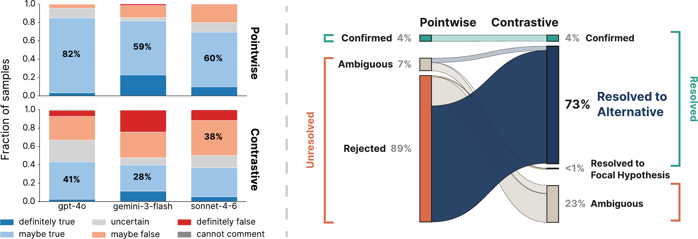
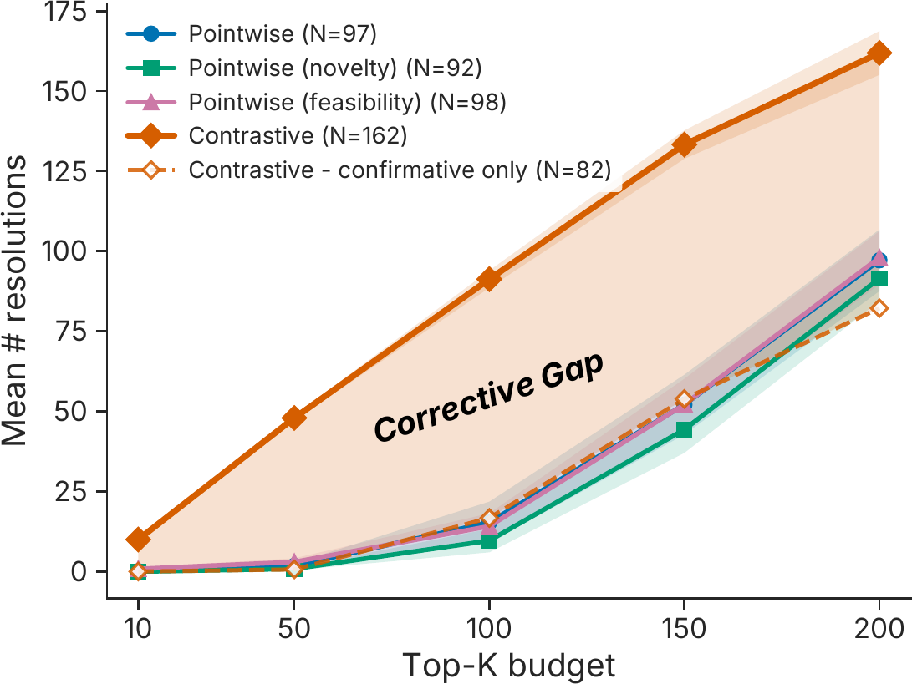
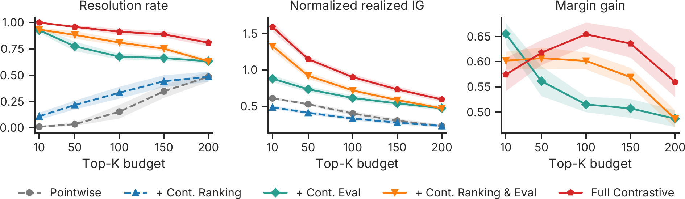

Cornell University · Preprint 2026
Open-Ended Scientific Discovery over Competing Explanations
A discovery agent should not just ask is this hypothesis true? It should ask which of the competing explanations does the evidence favor?
Department of Computer Science, Cornell University *Equal contribution
TL;DR
Most LLM discovery agents are pointwise: they score one hypothesis at a time. Rejecting a hypothesis then says what is unlikely, not which alternative is better supported, so negative evidence is spent without resolving anything. Contrastive Discovery makes the unit of discovery a scientific question together with the mutually exclusive, collectively exhaustive explanations that could answer it, and scores how evidence redistributes belief across them. One experiment can then rule out a hypothesis and identify the better-supported alternative.
01 · How it works
We keep the belief-shift principle of surprisal-based discovery but change what belief is held over: a set of explanations for the same question, rather than a single claim and its implicit complement.
At each step the agent poses a local scientific question and builds a contrast set of K explanations that are mutually exclusive and cover the outcomes the evidence should distinguish.
Given a poor credit score, how does self-employment affect mortgage denial rates?
Self-employed applicants face higher / no different / lower denial rates.
An LLM elicitor allocates 100 units of belief across the alternatives before seeing any evidence, then again after the agent designs and runs its analysis. Five samples are averaged and the alternatives are shuffled to reduce positional bias.
The discovery score is the entropy-scaled belief shift κt = DKL(ppost ‖ pprior) / log2 K, which guides Monte-Carlo tree search. A question is resolved when one explanation clears a posterior threshold: confirmative if it was already leading, corrective if the evidence moved support to a different explanation. Alternatives that fall below a low threshold are ruled out.
Pointwise discovery is the K = 2 special case {h, ¬h}: the complement absorbs every alternative, so a rejection cannot say which one gained support.
02 · Results
Six datasets spanning materials science, astronomy, mortgage discrimination, online discourse, software engineering, and longitudinal social behavior; a shared agent scaffold and the same budget of 200 evidence-generating attempts for every method.



03 · Do the resolutions hold up?
A resolution records where one model’s belief settled, so we test it against blinded experts, the raw evidence, other model families, and matched costs.
38 evaluators with MS or PhD degrees judged 60 questions from the question, alternatives, and evidence alone. The expert majority chose the same explanation as Contrastive Discovery on 78.4% of resolved questions, and on 81.8% of the questions where pointwise discovery had rejected its hypothesis and stopped.
Given only the numerical results for 14 claims with documented findings, the elicitor ranked the documented answer first in all 11 cases where a confidence interval could be recovered. Reversing the sign of the evidence reversed the resolution on all 14 claims; removing the evidence prevented any resolution.
Re-eliciting beliefs on 180 contrast sets with gpt-4o, gemini-3-flash, and claude-sonnet-4-6: the three models choose the same leading explanation on 55% of sets before seeing the evidence and on 88.9% after, increasing in every dataset.
Capping both methods at the same total tokens, Contrastive Discovery resolves 148.3 questions against 87.7; at the same dollar cost, 145.8 against 92.2. The advantage holds at every resolution threshold from 0.60 to 0.95 and in each of the six datasets.
Agentic science should represent discovery not as a stream of accepted or rejected claims, but as resolving among competing explanations.
04 · Citation
@misc{liu2026contrastive,
title = {Contrastive Discovery: Open-Ended Scientific Discovery over Competing Explanations},
author = {Liu, Ziang and Kim, James J. and Dai, Yijia and Sun, Jennifer J.},
year = {2026},
note = {Preprint}
}